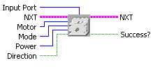
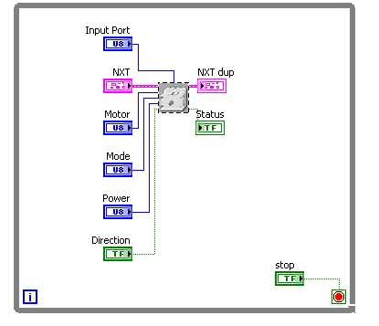

This block allows you to control upto 4 LEGO motors using NXT.
Ensure to supply power to your motors using exernal battery.

Inputs
Input Port
- This is where you select the Sensor
Port
your Motor Multiplexer is
attached to.
Motor- This is the port which your motor is attached to on the Motor
Multiplexer.
Mode...
| Run |
the motor is run using the directionand power settings. |
| Float |
The motor is stopped and left to float. |
| Break |
Motor is stopped and kept rigid. |
Power-Select the power of the motor (1-100)
Direction-Specify the direction of the Motor
Sample Program

Sample located at
..\mindsesnors.com
LVHS\mindsensors.com Sample Programs\Motor Multiplexer-SP\Motor
Multiplexer-Direct
Discuss Your Ideas>>